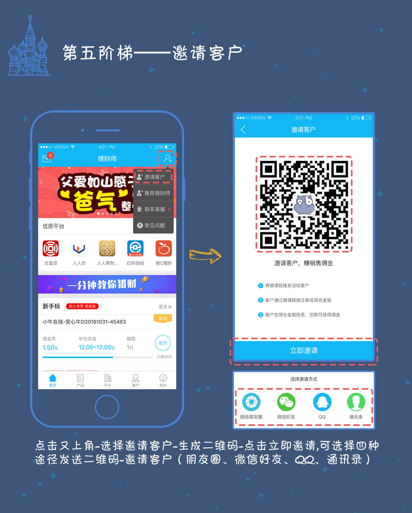
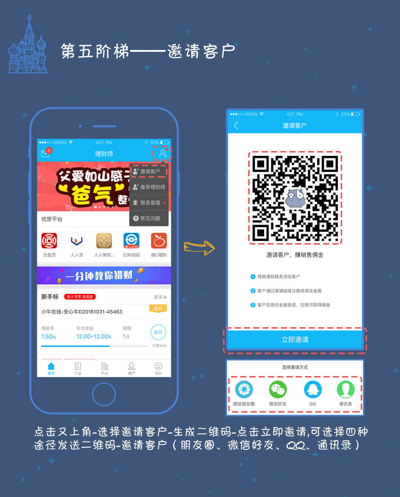

首投标
产品列表或产品信息页右上角有“首投”标识的产品称为首投标。首投标客户可以重复购买，但只有在首次购买该机构的产品时理财师才会有佣金，且通常佣金较高，非首次购买时理财师无佣金。
复投标
产品列表或产品信息页右上角有“复投”标识的产品称为复投标。复投标客户可以多次购买，且每次购买理财师都有佣金。
佣金计算期限上限
只有首投标有该上限：如果名下客户购买的首投标产品期限（最小）小于或等于“佣金计算期限上限”，则按产品期限给理财师结算佣金；如果产品期限大于“佣金计算期限上限”则按“佣金计算期限上限”给理财师结算佣金。
佣金计算金额上限
只有首投标有该上限：如果名下客户投资首投标的金额小于或等于“佣金计算金额上限”，则按投资金额给理财师结算佣金；如果投资金额大于“佣金计算金额上限”则按“佣金计算金额上限”给理财师结算佣金。
账户直通
账户直通是合作平台的一种标识，带有该标识的平台账户可以与T呗账户相互绑定。用户登录T呗后，可通过T呗直接进入该平台进行充值、投资、提现等操作，而不需要额外进行登录。
提前赎回
提前赎回是指购买的产品尚未到期（已过锁定期），但是用户想要提前拿回自己的本金和已有收益而进行的一种赎回操作。只有写明“xxx天后可赎回”的产品才能进行提前赎回，其中“xxx天”即为锁定期，未过锁定期无法进行提前赎回。
提前转让
提前转让是指购买的产品尚未到期（已过锁定期），但是投资人通过将持有的产品份额转让给其他投资人进而提前拿回自己的本金和已有收益的一种行为。只有写明“xxx天后可转让”的产品才能进行提前转让，其中“xxx天”即为锁定期，未过锁定期无法进行转让。
报单
报单是理财师将名下客户的投资记录报给貅比特的一种行为。当名下客户进行了投资，但是交易动态中却没有该笔投资记录时，理财师需要进行报单。